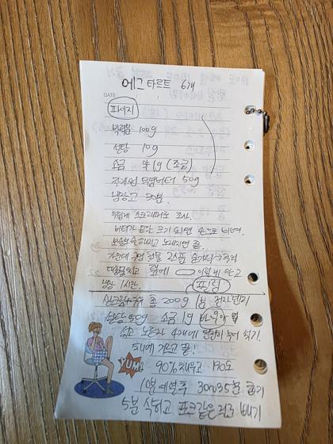
파이·타르트🥧 에그타르트
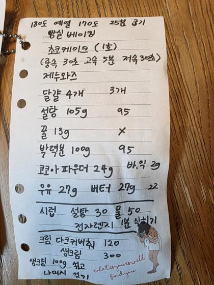
케이크🍰 초코 케이크 (1호)
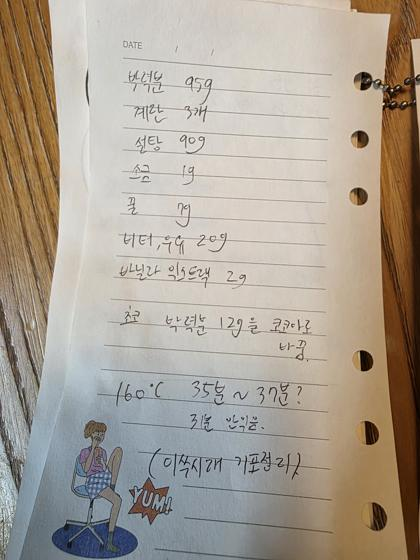
케이크🎂 제누와즈 (기본)
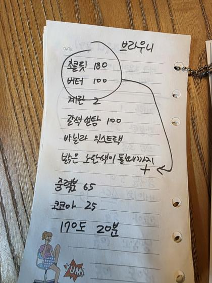
브라우니🍫 브라우니
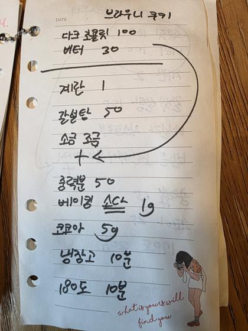
쿠키🍪 브라우니 쿠키
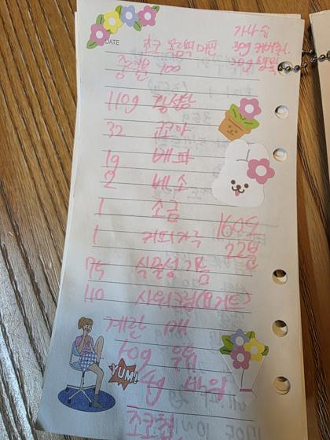
머핀·번🧁 초코 머핀
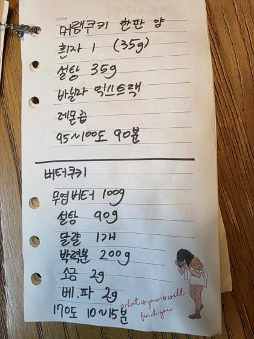
쿠키🍥 머랭쿠키 & 버터쿠키
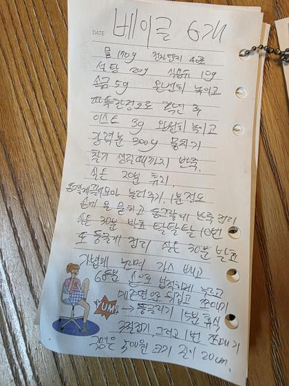
빵🥯 베이글
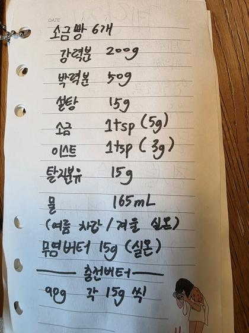
빵🥖 소금빵
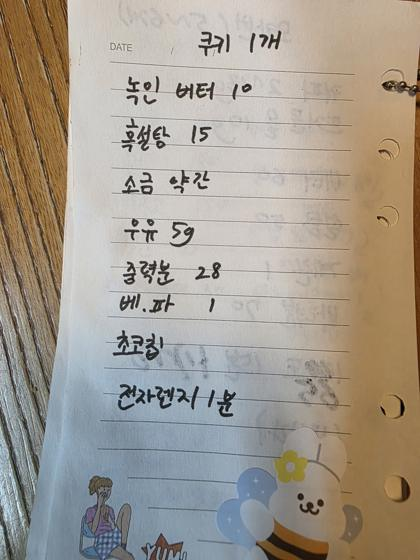
쿠키☕ 전자레인지 머그 쿠키
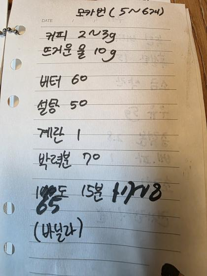
머핀·번🥐 모카번
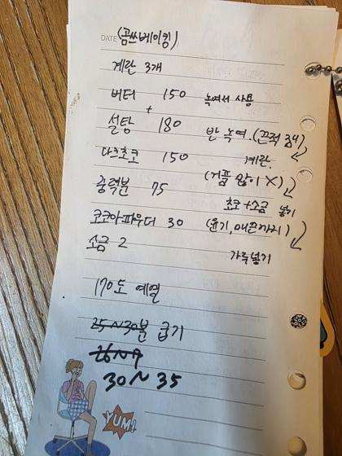
브라우니🍫 브라우니 (곰쓴베이킹)
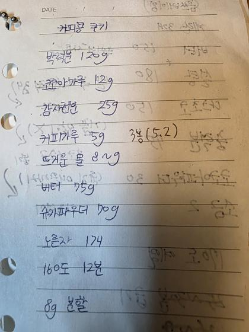
쿠키🫘 커피콩 쿠키
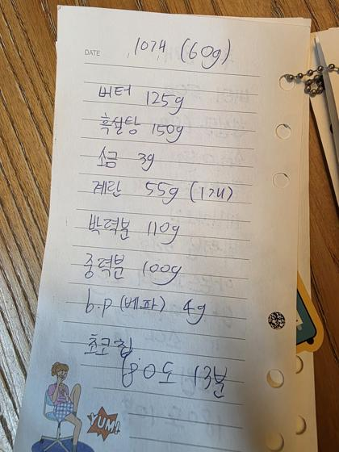
쿠키🍪 초코칩 쿠키 (큰 사이즈)
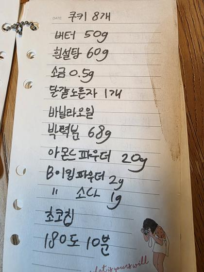
쿠키🌰 아몬드 초코칩 쿠키
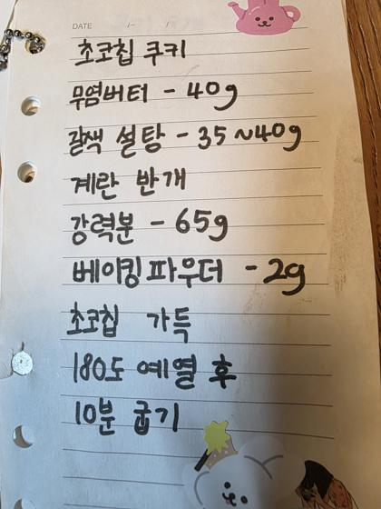
쿠키🍪 초코칩 쿠키 (소량)
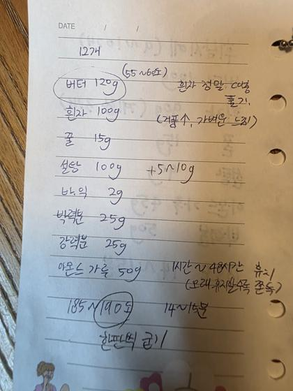
구움과자🥮 피낭시에
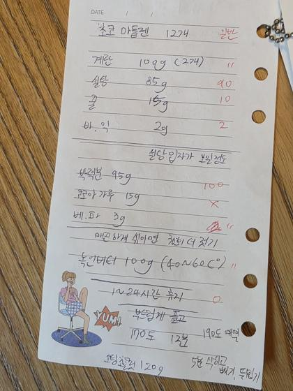
구움과자🐚 초코 마들렌
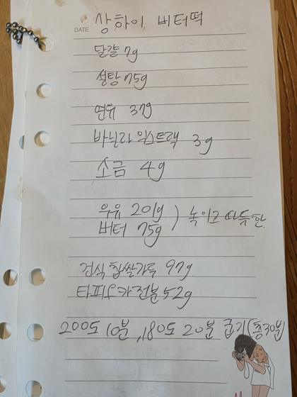
기타🧈 상하이 버터떡
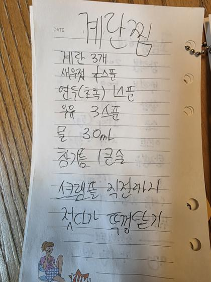
기타🥚 계란찜
조건에 맞는 레시피가 없습니다.